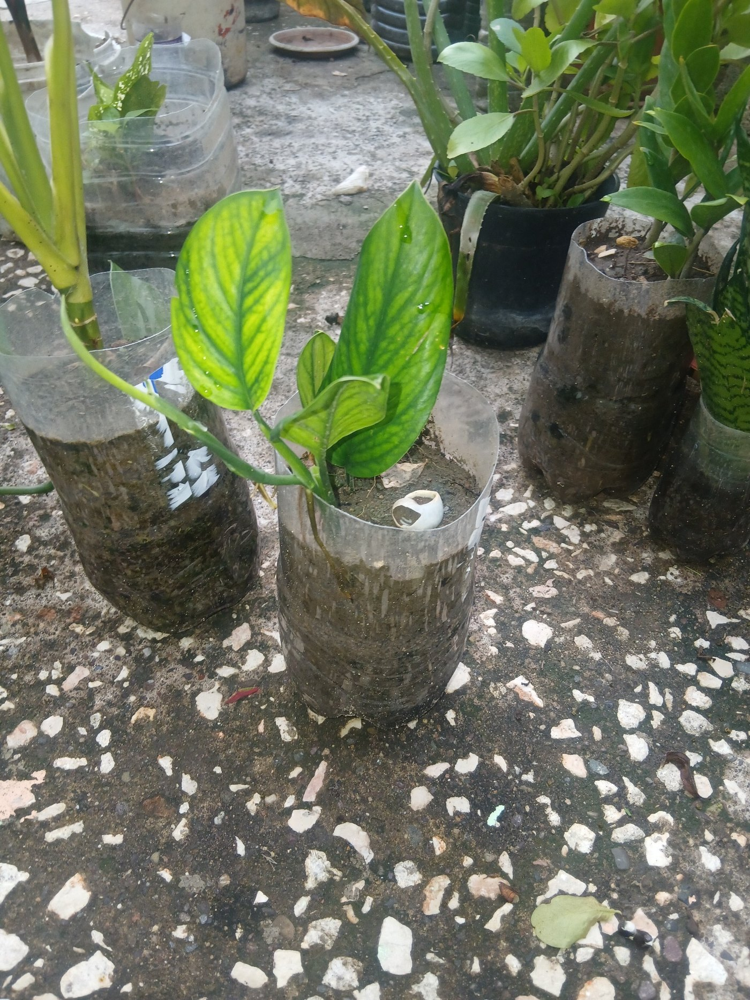
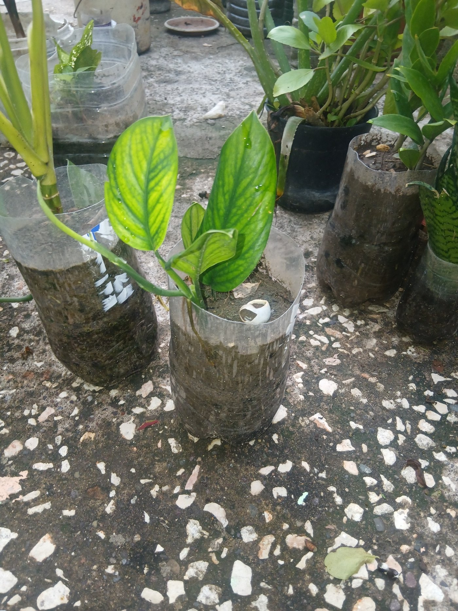

Plants growing happily in a reused plastic bottle – simple and effective.
Many people think that you need fancy pots to start planting, but that’s not true at all. At home, I’ve planted flowers, fever grass, aloe vera, and other plants in all kinds of containers — water bottles, buckets, tins, and even old paint pans.
My fever grass, for example, is growing nicely in a 5-gallon oil bottle. They all work just as well as store-bought pots once you give them drainage and a good spot.
What Kind of Containers Can You Use?
You can use many everyday items as plant containers, such as:
- Plastic water bottles (cut and shaped as needed)
- Old buckets
- Clean tins
- Old paint pans (washed out)
- Any sturdy container that can hold soil and allow drainage
The truth is, plants don’t care what the container looks like. As long as it has soil, water, and sunlight, they’ll grow.
Examples from My Garden
Reused Bottles and Buckets
Larger Containers and Cut Bottles
 

Why Planting in Containers Matters
Reusing containers helps reduce plastic waste, saves space, and keeps your garden affordable. You don’t have to wait until you can buy matching pots. You can start with what you have and upgrade later.
It’s a small step that makes a big difference — both for the environment and your pocket.